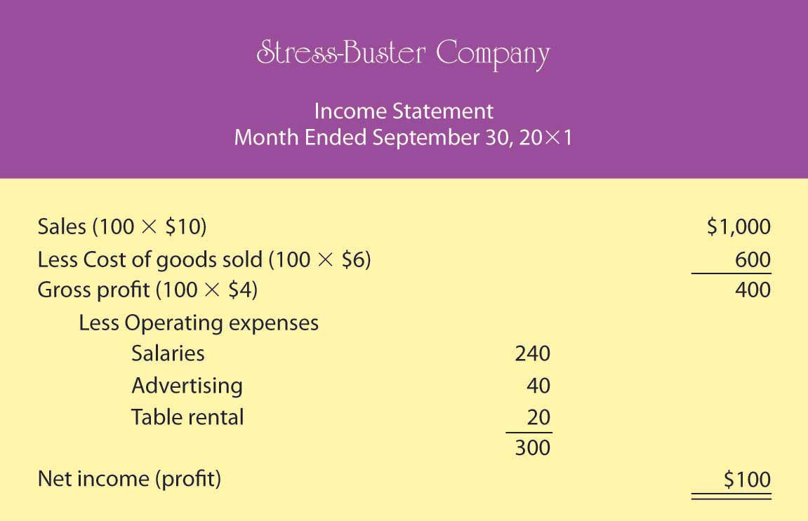
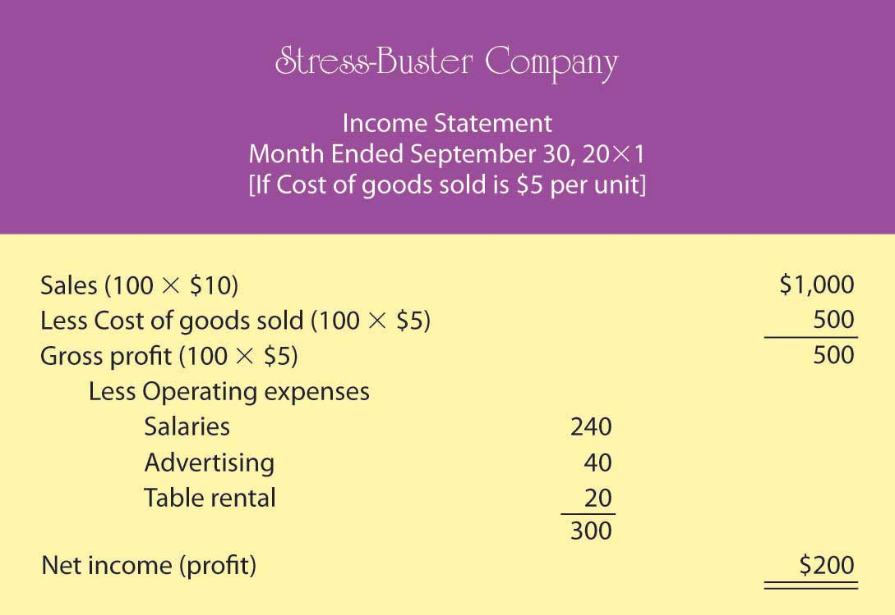
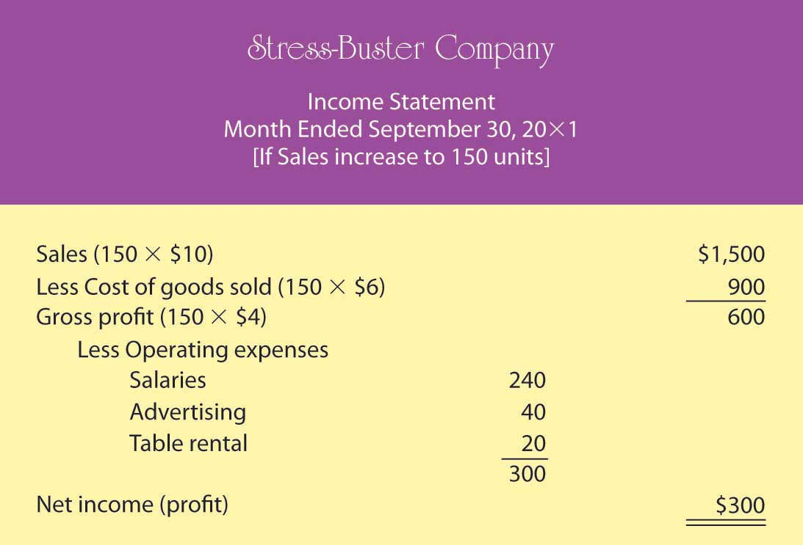
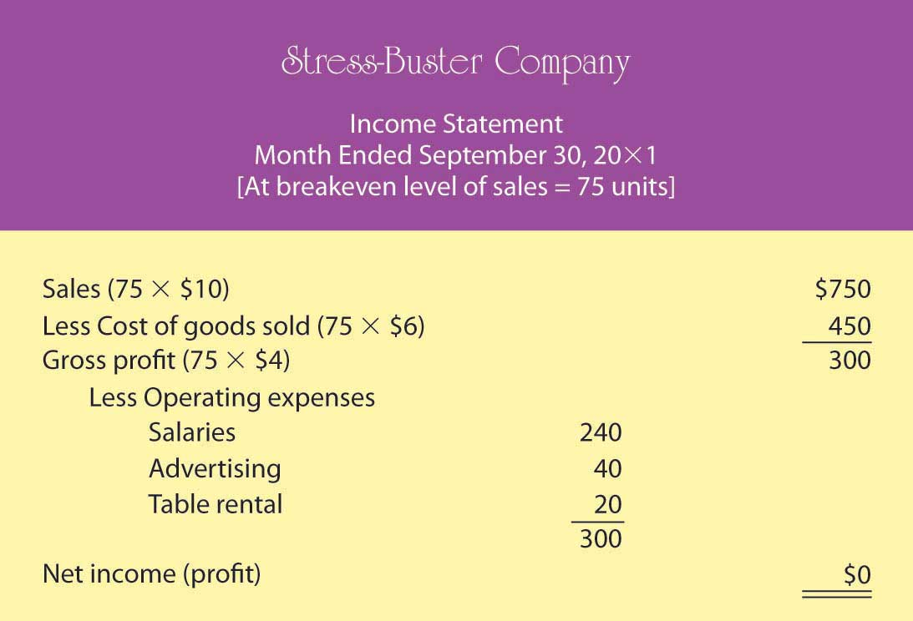
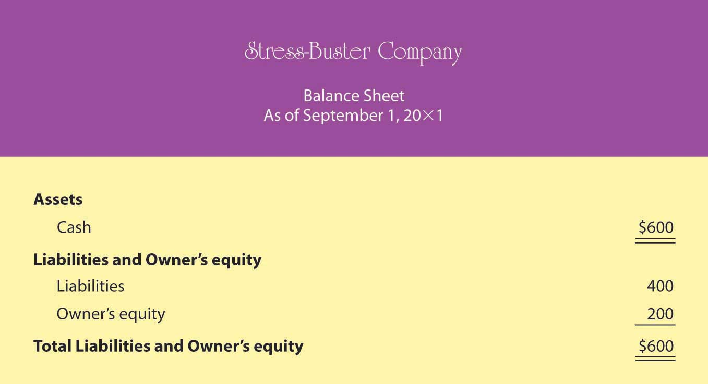
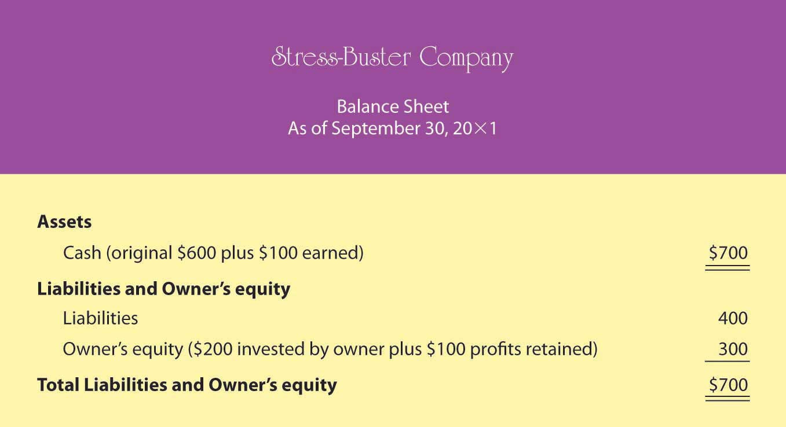

If you’re in business, you need to understand financial statements. Even high-ranking corporate executives can no longer hold subordinates responsible for a firm’s financial statements. They can’t plead ignorance or fall back on delegation of authority. In a business environment tainted by fraudulent financial reporting and other misdeeds by corporate officials, top managers are now being held accountable for the financial reports issued by the companies they oversee. Without an understanding of financial statements, an executive would be like an airplane pilot who doesn’t understand the instrument readings in the cockpit: he or she might be able to keep the plane in the air for a while but wouldn’t recognize any signs of impending trouble until it was too late.
If you were running a company, what type of information would you want to know? Here are just a few pertinent questions to which you’d probably want some answers:
Financial statements will give you answers to these questions:
Knowing what financial statements will tell you is one thing. But because learning how to prepare them is another matter, we’ll go slowly and keep things simple. Let’s assume that you need to earn money while you’re in college, and you decide to start a small business. Your business—which will sell stuff to other college students—will operate on a “cash” basis: you’ll pay for everything with cash, and everyone who buys something from you will pay in cash.
Your first task is to decide what you’re going to sell. You notice that with homework, exams, social commitments, and the hectic lifestyle of the average college student, you and most of the people you know always seem to be under a lot of stress. Sometimes you wish you could go back to the days when all you had to do was play. That’s when the idea comes to you: maybe you could make some money selling a product called the “Stress-Buster Play Pack.” Here’s your idea: you’ll buy small toys and other fun stuff—instant stress relievers—at a local dollar store and pack certain items in a rainbow-colored plastic treasure chest labeled “Stress-Buster.” You could also include a list of suggestions on student stress reduction circulated by the dean’s office.
You have enough cash to buy a month’s worth of plastic treasure chests and toys. After that, you’ll use the cash generated from the sale of the Stress-Buster Play Packs to replenish your supply. Each plastic chest will cost $1, and you’ll fill each one with a selection of five of the following toys, all of which you can buy for $1 each:
You’ll experiment with various toy combinations until you get the mix right. You plan to sell each Stress-Buster Play Pack for $10 from a rented table stationed in a sales area outside a major dining hall. The table will cost you $20 a month. Because your own grades aren’t what you’d like them to be, you decide to hire fellow students (trustworthy people with better grades) to staff the table at peak traffic periods. They’ll be there from noon until 2:00 p.m. each weekday, and you’ll pay them $6 an hour. Wages, therefore, will cost you $240 a month (2 hours × 5 days × 4 weeks = 40 hours × $6). Finally, you’ll run ads in the college newspaper at a monthly cost of $40. Thus, your total monthly costs will amount to $300 ($20 + $240 + $40).
During your first month, you sell 100 play packs. To find out whether you made a profit, you prepare an income statementFinancial statement summarizing a business’s revenues, expenses, and net income., which shows revenuesAmount of money earned by selling products to customers. (or sales) and expensesCosts incurred by selling products to customers. (cost of doing business). Expenses are divided into two categories. Cost of goods soldCost of the products that a business sells to customers. is the total cost of the goods being sold. Operating expensesCosts of selling products to customers, not including cost of goods sold. are the costs of operating the business except for the costs of things being sold. The difference between sales and cost of goods sold is your gross profit (or gross margin)Positive difference between revenues and cost of goods sold.. The difference between gross profit and operating expenses is net income (or profit)Positive difference between gross profit and total expenses., which is often called the “bottom line.”
Let’s prepare an income statement for your proposed company. (Remember that we’ve made things simpler by handling everything in cash.) Figure 12.3 "Income Statement for Stress-Buster Company" is your income statement for the first month.
Figure 12.3 Income Statement for Stress-Buster Company
Your income statement shows that you sold 100 units at $10 each, bringing in revenues or sales of $1,000. Each unit sold cost you $6 ($1 for the treasure chest plus 5 toys costing $1 each). So your cost of goods sold is $600 (100 units × $6 per unit). Your gross profit (the amount left after subtracting cost of goods sold from sales) was $400 (100 units × $4 each). After subtracting operating expenses of $300 (costs of doing business other than the cost of the products sold), you generated a positive net income (or profit) of $100.
You were quite relieved to find that you’d made a profit during your first month, yet you can’t help but wonder what you’ll have to do to make even more money next month. You consider three possibilities:
To consider these possibilities fully, you need to play a number of “what-if” games to generate new income statements for each option. Because the first possibility (packaging four toys instead of five) is the most appealing, you start there. Your cost of goods sold would go down from $6 to $5 per unit (4 toys @ $1 each + 1 plastic treasure chest @ $1). Figure 12.4 "Proposed Income Statement Number One for Stress-Buster Company" is your hypothetical income statement if you choose this option.
Figure 12.4 Proposed Income Statement Number One for Stress-Buster Company
This appears to be a good idea. Under this scenario, your income doubles from $100 to $200 because your per-unit gross profit increases by $1 (and you sold 100 stress packs). But there may be a catch: if you cut back on the number of toys, your customers might perceive your product as having a lesser value for the money. You remember a conversation with a friend whose father, a restaurant owner, had cut back on the cost of food served by buying less-expensive meat. In the short term, gross profit per meal went up, but customers stopped coming back, and the restaurant nearly went out of business.
So, you decide to consider the second possibility: reducing your operating costs. In theory, it’s a good idea, but in practice—at least in your case—it probably won’t work. You can’t do without the table, and you need your workers (because your grades haven’t improved, you still don’t have time to sit at the table yourself). You might cut salaries from $6 to $5 an hour, but you may have a hard time finding people willing to work for you. You could reduce advertising costs by running an ad every two weeks instead of every week. But this tactic would increase your income by only $20 a month and could easily lead to a drop in sales.
You move on to possibility number three—increase sales. The appealing thing about this option is that it has no downside. If you could somehow increase the number of units sold from 100 per month to 150, your income would go up. (You’d stick with your original five-toy product.) Your new what-if income statement is shown in Figure 12.5 "Proposed Income Statement Number Two for Stress-Buster Company".
Figure 12.5 Proposed Income Statement Number Two for Stress-Buster Company
As you can see, this is an attractive possibility, even though you haven’t yet figured out how you’re going to increase sales. (Maybe you could put up some eye-popping posters and play cool music to attract people to your table. Or maybe your workers could attract buyers by demonstrating relaxation and stress-reduction exercises.)
Playing these what-if games has started you thinking: is there some way to figure out the level of sales you need to avoid losing money—to “break even”? This can be done using breakeven analysisMethod of determining the level of sales at which the company will break even (have no profit or loss).. To break even (have no profit or loss), your total sales revenue must exactly equal all your expenses (both variable and fixed). For a merchandiser, like a hypothetical one called The College Shop, this balance will occur when gross profit equals all other (fixed) costs. To determine the level of sales at which this will occur, you need to do the following:
Determine your total fixed costsCosts that don’t change when the amount of goods sold changes., which are so called because the total cost doesn’t change as the quantity of goods sold changes):
Identify your variable costsCosts that vary, in total, as the quantity of goods sold changes but stay constant on a per-unit basis.. These are costs that vary, in total, as the quantity of goods sold changes but stay constant on a per-unit basis. State variable costs on a per-unit basis:
Determine your contribution margin per unitExcess of revenue per unit over variable cost per unit.: selling price per unit – variable cost per unit:
Calculate your breakeven point in unitsNumber of sales units at which net income is zero.: fixed costs ÷ contribution margin per unit:
Your calculation means that if you sell 75 units, you’ll end up with zero profit (or loss) and will exactly break even. To test your calculation, you can prepare a what-if income statement for 75 units in sales (which is your breakeven number of sales). The resulting statement is shown in Figure 12.6 "Proposed Income Statement Number Three for Stress-Buster Company".
Figure 12.6 Proposed Income Statement Number Three for Stress-Buster Company
What if you want to do better than just break even? What if you want to earn a profit of $200 next month? How many Stress-Buster Pack units would you need to sell? You can find out by building on the results of your breakeven analysis. Note that each additional sale will bring in $4 (contribution margin per unit). If you want to make a profit of $200—which is $200 above your breakeven point—you must sell an additional 50 units ($200 desired profit divided by $4 contribution margin per unit) above your breakeven point of 75 units. If you sell 125 units (75 breakeven units + the additional 50), you’ll make a profit of $200 a month.
As you can see, breakeven analysis is rather handy. It enables you to determine the level of sales that you must reach to avoid losing money and the level of sales that you have to reach to earn a profit of $200. Such information will help you plan for your business. For example, knowing you must sell 125 Stress-Buster Packs to earn a $200 profit will help you decide how much time and money you need to devote to marketing your product.
The balance sheetReport on a company’s assets, liabilities, and owner’s equity at a specific point in time. reports the following information:
While your income statement tells you how much income you earned over some period, your balance sheet tells you what you have (and where it came from) at a specific point in time.
Most companies prepare financial statements on a twelve-month, or fiscal yearCompany’s designated business year., basis that ends on December 31 or some other date on the calendar—for example, June 30 or September 30. A company generally picks a fiscal year-end date that coincides with the end of its peak selling period (a crabmeat processor, for example, might end its fiscal year in October, when the crab supply has dwindled). Most companies also produce financial statements on a quarterly or monthly basis. For your hypothetical company, you’d prepare a monthly balance sheet.
The balance sheet is based on the accounting equationAccounting tool showing the resources of a business (assets) and the claims on those resources (liabilities and owner’s equity).:
Assets = Liabilities + Owner’s equityThis equation underscores the fact that a company’s assets came from somewhere: either from borrowing (liabilities) or from investments made by owners (owner’s equity). The asset section of the balance sheet on the one hand and the liability and owner’s-equity section on the other must be equal, or balance. Hence, the term balance sheet.
Let’s prepare two balance sheets for your company: one for the first day you started and one for the end of your first month of operations. Let’s assume that when you started the business, you borrowed $400 from your parents and put in $200 of your own money. Your first balance sheet is shown in Figure 12.7 "Balance Sheet Number One for Stress-Buster Company". It shows clearly that your business has $600 in cash (your assets): of this total, you borrowed $400 (your liabilities) and invested $200 of your own money (your owner’s equity).
Figure 12.7 Balance Sheet Number One for Stress-Buster Company
Now, let’s see how things change at the end of the month. Recall that your business earned $100 (based on sales of 100 units) during the month of September and that you decided to leave these earnings in the business. This $100 profit increases both the assets of the company (its cash) and your investment in it (its owner’s equity). Figure 12.8 "Balance Sheet Number Two for Stress-Buster Company" shows what your balance sheet will look like on September 30. Once again, your balance sheet “balances.” You now have $700 in cash—$400 that you borrowed and $300 that you’ve invested in the business (your original $200 investment plus the $100 profit from the first month of operations, which you’ve kept in the business).
Figure 12.8 Balance Sheet Number Two for Stress-Buster Company
Accounting can be helpful for even a modest little company. It tells you whether you made a profit and, if so, how much. It permits you to play what-if games to determine what your profit would be under different assumptions and conditions. It enables you to determine the number of units you need to sell in order to break even or to reach a targeted income level. Finally, it shows you what assets you have and where they came from.
(AACSB) Analysis
Describe the information provided by each of these financial statements: income statement, balance sheet, statement of cash flows. Identify ten business questions that can be answered by using financial accounting information. For each question, indicate which financial statement (or statements) would be most helpful in answering the question, and why.
(AACSB) Analysis
You’re the president of a student organization, and to raise funds for a local women’s shelter you want to sell single long-stem red roses to students on Valentine’s Day. Each prewrapped rose will cost $3. An ad for the college newspaper will cost $100, and supplies for posters will cost $60. If you sell the roses for $5, how many roses must you sell to break even? Because breaking even won’t leave you any money to donate to the shelter, you also want to know how many roses you’d have to sell to raise $500. Does this seem like a realistic goal? If the number of roses you need to sell in order to raise $500 is unrealistic, what could you do to reach this goal?